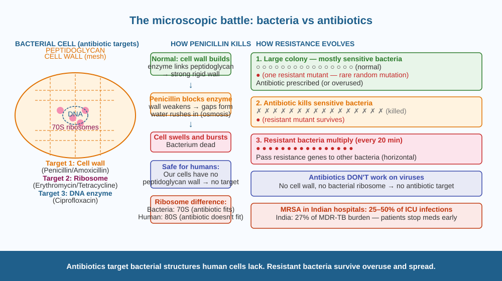

Discover exactly how antibiotics kill bacteria — and why overusing them is creating bacteria that our medicines can no longer stop.
A doctor prescribes amoxicillin for a throat infection. Two days later, the patient feels better. The bacteria that were multiplying inside the throat are dead. But the antibiotic never entered a single bacterial cell — and yet the bacteria died. How can a medicine kill something it never touches?
Bacteria are living cells with their own machinery — but their machinery is subtly different from human cell machinery. Antibiotics exploit these differences by targeting bacterial structures that human cells do not have.
How major antibiotic classes work:
1. Cell wall synthesis inhibitors (Penicillin, Amoxicillin). Bacteria (unlike human cells) have a rigid cell wall made of a mesh of peptidoglycan. Without it, the cell bursts from internal water pressure (osmotic pressure). Penicillin-class antibiotics block the enzyme that builds this peptidoglycan mesh. The bacteria can no longer repair or extend their cell walls. As they try to divide, the wall weakens, water rushes in, and the cell swells and bursts. Human cells have no peptidoglycan wall → the antibiotic has no target in human cells → no harm to the patient.
2. Protein synthesis inhibitors (Erythromycin, Tetracycline). These antibiotics bind to bacterial ribosomes (the molecular machines that make proteins). Bacteria have 70S ribosomes; human cells have 80S ribosomes — different enough that the antibiotic fits the bacterial ribosome but not the human one. Without functional ribosomes, bacteria cannot make the proteins they need to survive and reproduce.
3. DNA gyrase inhibitors (Ciprofloxacin). These block an enzyme bacteria use to unwind and copy their DNA during reproduction. Without DNA replication, bacteria cannot divide. Human cells use different enzymes for this process.
Antibiotic resistance — the crisis:
When antibiotics are overused or courses are not completed, some bacteria survive by chance — because they carry a mutation in the antibiotic's target structure. These resistant bacteria: - Reproduce rapidly (bacteria divide every 20 minutes in ideal conditions) - Pass resistance genes to other bacteria horizontally (even across different species)
The result: bacteria evolve that are resistant to multiple antibiotics. MRSA (methicillin-resistant Staphylococcus aureus) kills 700,000 people globally per year and is already spreading in Indian hospitals. By 2050, antibiotic-resistant infections are projected to kill 10 million people annually — more than cancer.
Why antibiotics don't work on viruses: Viruses have no cell wall, no bacterial ribosome, no bacterial DNA gyrase. They live inside your own cells and use your own machinery. Antibiotics have no bacterial targets to attack.
Imagine bacteria as houses with brick walls. Penicillin is like a saboteur who removes one specific type of mortar used only in brick houses — not in concrete buildings (your cells). Without that mortar, the walls can't hold up. The houses collapse. Your concrete buildings are untouched. Resistance is like a brick that changed shape — the saboteur's tool no longer fits the new brick. Overuse of antibiotics is like training all the houses to have the new-shaped bricks.

The diagram has three panels. Left: A bacterial cell showing: outer peptidoglycan mesh (blue grid), ribosomes (orange dots inside), DNA (central circle). Centre: Penicillin molecule (shown as key) blocking the peptidoglycan-building enzyme → gaps appear in the wall → cell bursting arrow. Right: Resistance diagram showing: normal bacteria (cross) vs resistant bacteria (circle with modified wall, survives antibiotic exposure, multiplies). Bottom bar: virus has no cell wall → antibiotic has no target.
In your notebook, list 5 times you or a family member took antibiotics in the past year. For each: (1) Was it prescribed by a doctor or taken from a chemist without prescription? (2) Was the full course completed? (3) Was it for a cold or fever (which might be viral)? Tally up how many of those courses might have been unnecessary (viral infections) or incomplete. This is the everyday source of resistance.
Bacteriophages are viruses that specifically infect and kill bacteria — without harming human cells. In the 1920s, before antibiotics were discovered, phage therapy was used to treat bacterial infections. It fell out of use when penicillin was discovered in 1928. Now, as antibiotic resistance grows, phage therapy is being revisited. Unlike antibiotics, phages evolve alongside resistant bacteria — but they are very specific, killing only one or a few bacterial species. Should we invest heavily in phage therapy as a backup to antibiotics? What would be the challenges of making it as easy to use as a tablet?
How do antibiotics kill or stop bacteria?
Why is understanding the mechanism of antibiotic resistance important?
If antibiotics are overused, what would you predict about bacteria?
A rural Indian clinic gives out amoxicillin without prescription to anyone who asks, for any illness. A city hospital strictly requires prescriptions and confirms the infection is bacterial before prescribing. Over 10 years, compare the expected frequency of resistant infections in patients treated at each facility. Write out your reasoning using: (a) selection pressure, (b) resistant mutant survival, (c) horizontal gene transfer, and (d) the effect on future treatment options.
Penicillin was discovered accidentally in 1928 when Alexander Fleming noticed that a Petri dish of Staphylococcus bacteria had been contaminated by a mould (Penicillium notatum) — and a clear ring around the mould was free of bacteria. Fleming realised the mould was producing a substance that killed the bacteria. The mould had been doing this for millions of years — not to help humans, but because it had evolved this weapon to compete with bacteria for space and nutrients. We borrowed an evolutionary arms race strategy and turned it into medicine. The bacteria are now fighting back using the same evolutionary process.
Antibiotics target bacterial-specific structures (cell wall, bacterial ribosomes, bacterial DNA enzymes) that human cells lack. Overuse kills sensitive bacteria and leaves resistant ones to multiply — creating infections no medicine can treat.